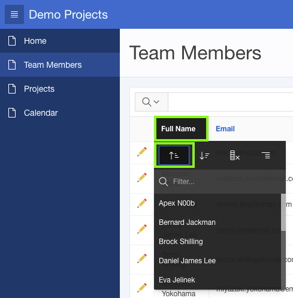

Update the page properties from Demo Team Members to Team Members.
In the Property Editor:
Identification: Name - enter Team Members
Identification: Title - enter Team Members
Note: It is important the Title you enter is meaningful. The Title displays in the browser's title bar.
You may also consider adding the application name to each title, for example Demo Project - Team Members.
Click Save.
Breadcrumbs are very common within Web applications to allow users to easily traverse from the current page to a parent page.
Use of the Back button is discouraged within Web applications, as this operation may display old ("stale") information to the user.
Update the breadcrumb entry for the page.
In the Rendering tree, click the Shared Components tab.
Expand the Breadcrumbs folder and click the Breadcrumb entry.
In the Property Editor, click the Edit Component button.
Note: If a dialog window is displayed called Confirm Navigation, or similar as the exact message varies between browsers, you have not saved the previous changes.
Click Stay on this Page in the dialog window. Click Save on the toolbar, and then click the Edit Component button again.
Click the Demo Team Members breadcrumb entry.
For Short Name, enter Team Members, and click Apply Changes.

Click Edit Page 2 on the toolbar, to return to Page Designer.